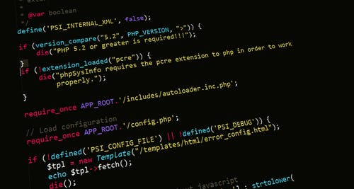

BCA Jobs are one of the popular and most abundant jobs you can find in India as well as abroad. The average salary of a BCA graduate is around INR 3-6 LPA in India. With almost every sector, whether government or private, using computer applications and software, there is a need for BCA Course graduates for various jobs. The various job roles offered to BCA graduates include Data Scientist, Systems Admin, Network Engineer, Project Assistant, Computer Programmer, Software Developer and many more. You can find BCA jobs in both government and private sectors, and even in top companies like Google, Microsoft, HCL, TCS. Apart from private companies, government organizations like Banks, BPOs, EPFO, NIOS offer BCA jobs in India for which a salary of INR 15,000 to 30,000 is offered per month. Some government jobs can even pay you a higher salary of INR 60,000-80,000 lakhs in India.
After graduating, BCA freshers and experienced professionals can get a job in various fields such as web designing, banking, computer programming and more. The average salary after BCA course can start from INR 3-5 LPA, and within 2-4 years you can earn as much as INR 4-10 LPA in top IT companies, MNCs and startups. The common jobs for BCA freshers and experienced professionals are mentioned below:
| Job Position | Average Salary | Highest Salary |
|---|---|---|
| Computer Programmer | INR 4.86 LPA | INR 9.82 LPA |
| Software Developer | INR 4.86 LPA | INR 12.64 LPA |
| System Analyst | INR 6.54 LPA | INR 10.58 LPA |